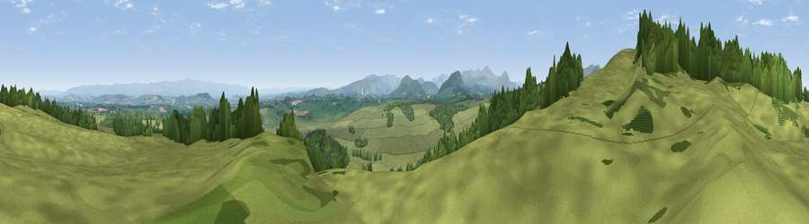

Viewpoint near Greystoke
#8863 in England · top 47% of its area beats it · near Greystoke · access?Where it is
The exact computed spot (NY 42525 31575). Click the marker for map links.
Public access: no public right of way or access land is recorded at this exact spot — it may be on private land. Computed from Natural England's CRoW access layer and OpenStreetMap rights of way — not the legal definitive map. Always verify locally.
The view, rendered

A 360° render of this exact spot computed from the terrain model, tree cover and land cover — summer colours, afternoon light, calibrated against photographs of famous viewpoints. Real trees, hedges and buildings will differ in detail.
The panorama
Grey silhouette: terrain skyline in each direction (720 bearings, Earth curvature and refraction included). Dashed green: skyline with trees (+15 m) and buildings (+8 m) as obstacles. Blue strip: how far the ground is visible on each bearing.
Where the view opens
Wedge length = distance to the farthest visible ground on that bearing (vegetation-aware). Rings at 10, 25 and 50 km.
What fills the view
79% grassland · 18% woodland · 2% cropland ·
Angular shares of the visible panorama (visual magnitude), not map area. Landscape diversity 0.27 (0–1 Shannon).
Key numbers
More beautiful places nearby
The staircase of upgrades: each row has a higher view potential than everything closer. Driving times are estimates from straight-line distance, calibrated against real road routing — check an actual route before setting out.
| Place | Direction | Drive | Score |
|---|---|---|---|
| Viewpoint near Johnby | WNW · 0 km | ~1 min | 70.0 |
| Greystoke Forest | NW · 3 km | ~7 min | 70.9 |
| Great Mell Fell | SSW · 7 km | ~14 min | 78.6 |
| Viewpoint near Watermillock | S · 8 km | ~15 min | 79.0 |
| Viewpoint near Mungrisdale | W · 8 km | ~16 min | 79.2 |
| Viewpoint near Mungrisdale | W · 8 km | ~17 min | 80.8 |
| Blencathra | WSW · 11 km | ~21 min | 81.7 |
| Viewpoint near Watermillock | SSE · 11 km | ~21 min | 82.6 |
54.67594, -2.89282 · source: screening · position refined by local search. Computed location — check access rights before visiting.